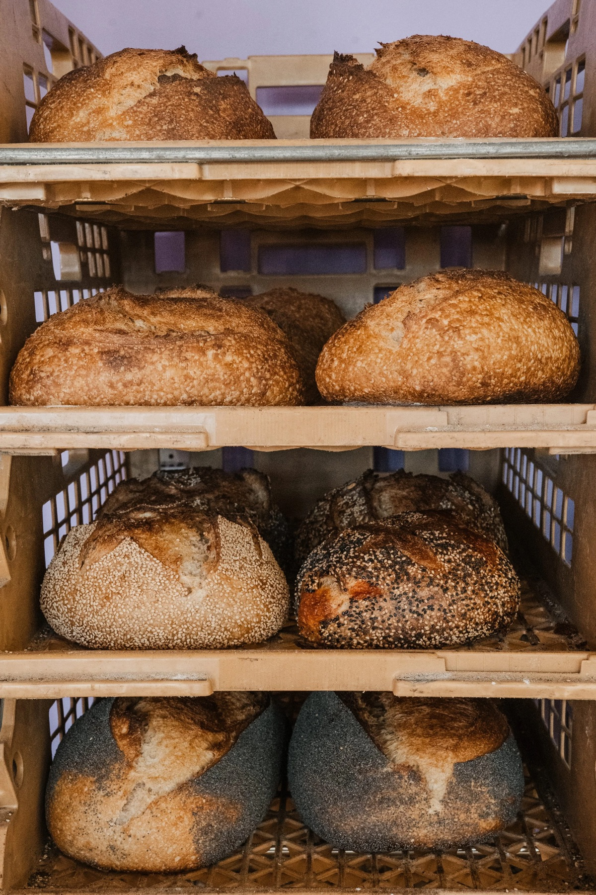
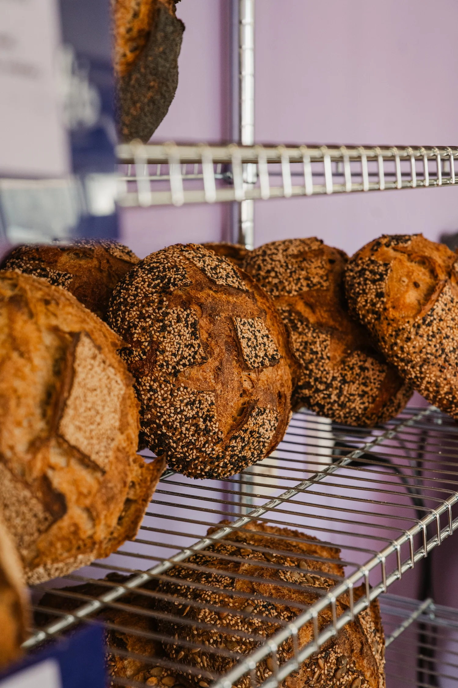
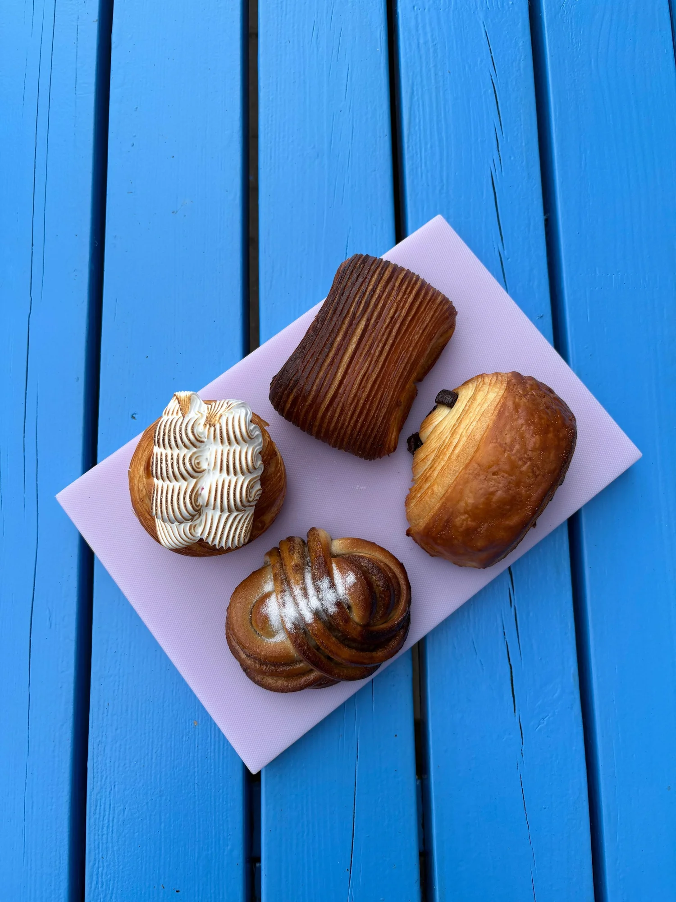
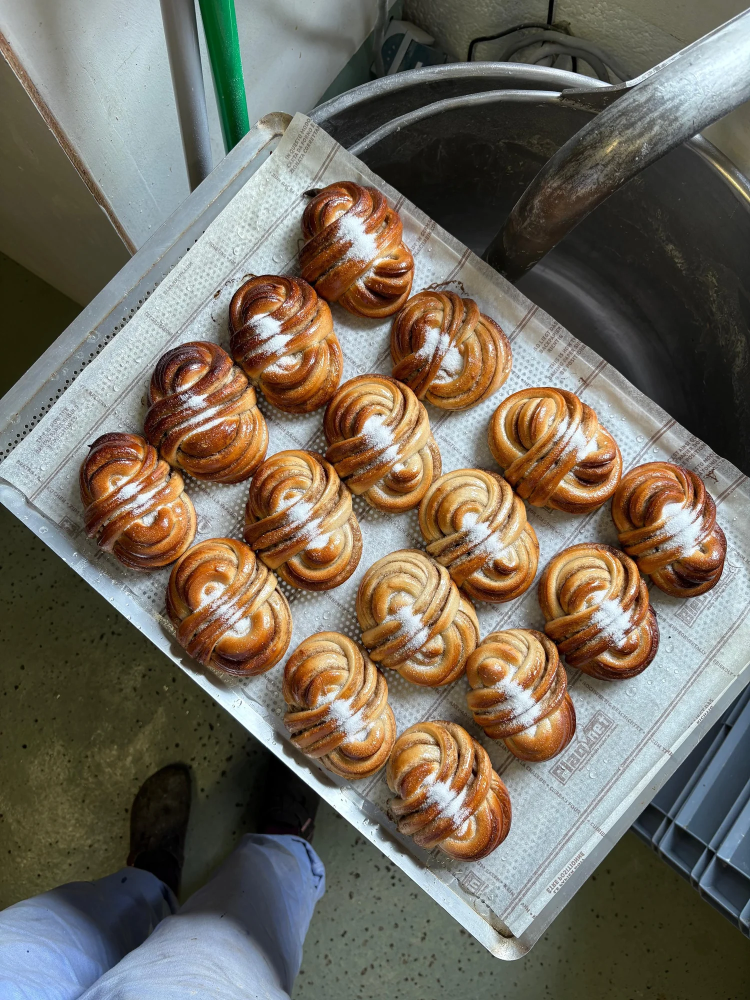
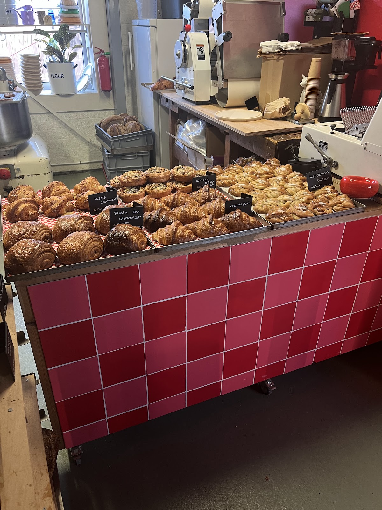
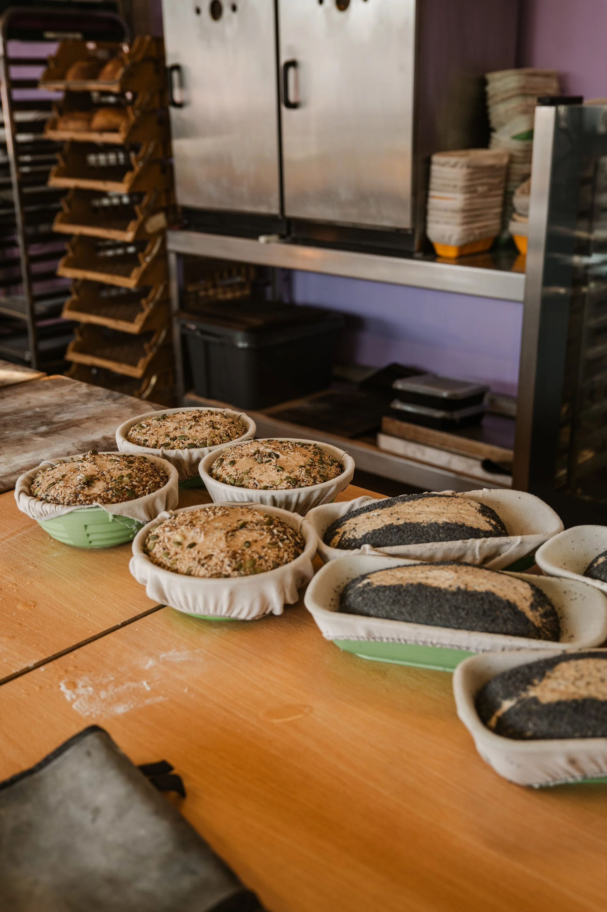
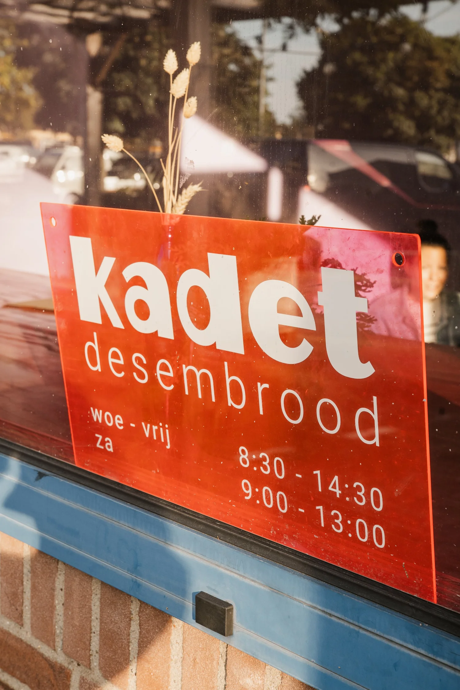
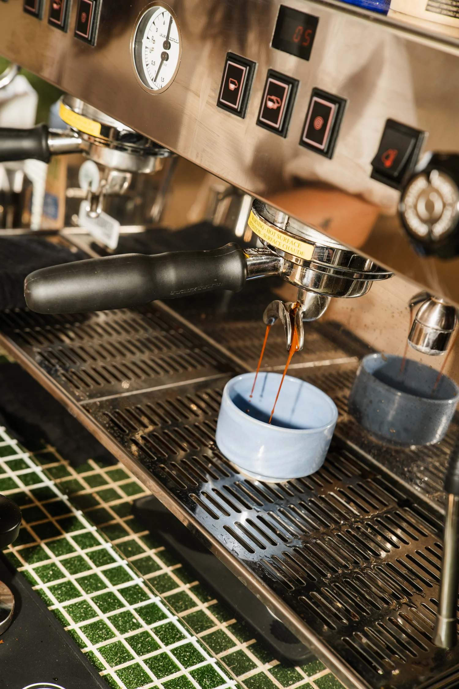

kadet
desembrood
- woe - vrij
- 8.30 - 14.30 uur
- za
- 9.00 - 13.00 uur
- ma, di, zo
- gesloten
Vier dagen per week open.
Europalaan 2b, 3526 KS UtrechtIn de Vechtclub
“Gratis parkeren voor de deur!” schrijft Hessel Winkelman op Google.

Desembrood van Nederlands graan.
Hier draait alles om desem, van naturel tot een brood dat volzit met zaden en pitten. Op de bordjes in de winkel lees je bijvoorbeeld:
- Naturel
- Zaden en gierst
- Naturel met zaden en pitten
- Rogge
- Volkoren zonnebloempit
- Rozijn-hazelnoot
- Jalapeño

En dan de croissants.
Die maken we zelf. In onze reviews komt er eentje steeds terug: de kimchi kaas croissant.
- Croissant
- Kaas croissant
- Kimchi kaas croissant
- Pain au chocolat
- Kardemom bullar



Bak je eigen desembrood.
Tijdens de desemworkshop beginnen we bij de basis. In een groepje van maximaal 9 personen, voor €85 per persoon.
-
Je stelt je eigen deegje samen
We maken een basis voor je, en daar voeg je naar hartelust andere granen aan toe. Want er is meer dan tarwe.
-
Je vouwt en shapet
Daar maken we veel ruimte voor, zodat je het echt onder de knie krijgt. Dat levert heel mooi brood op.
-
Je bakt het thuis af
Je deegje gaat mee naar huis in een rijsmandje. We laten zien hoe je het in je eigen oven afbakt, zodat je de volgende dag lekker aan de slag kunt.

Data
Zondag 15 november11.00 - 14.00 uur, € 85
Boek deze dagZondag 20 december11.00 - 14.00 uur, € 85
Boek deze dag
Lot bakt. Floor regelt de rest.
In maart 2025 kregen we de kans om samen een minibakkerij te beginnen. Super spannend, maar we sprongen in het diepe. Lot is de sterbakker, Floor regelt alles achter de schermen, en dat blijkt een topcombi.
In augustus 2026 konden we binnen de Vechtclub doorschuiven naar een grotere ruimte. Daar runnen we nu onze bakkerij, inclusief klein kafeetje.

Blijf even hangen.
Kom een bakje koffie drinken en verorber ter plekke wat lekkers. Daar is ons kafeetje voor.
4,8 sterren uit 54 reviews.
“Als Duitser ben ik nogal kritisch als het om brood gaat (...) Maar Bakkerij Kadet in Utrecht heeft me écht positief verrast. Het is zonder twijfel het beste brood dat ik tot nu toe in Nederland heb gegeten.”
“Het was heerlijk! Het brood is echt van hele goede kwaliteit en de snacks zoals de kimchi kaasstengel en ook alle andere snacks zijn zeker aan te raden. Jammer dat er geen vestiging in Amsterdam zit, maar ik reis graag even om!”
“Vooraf besteld en mijn bestelling lag keurig klaar. Heerlijk versgebakken en overduidelijk goede ingrediënten, een verborgen pareltje in Utrecht! De moeite waard om voor om te rijden. Gratis parkeren voor de deur!”
“Ik ben fan! Zelf woon ik niet in de buurt maar het is zeker een ritje waard. Onwijs lekkere zuurdesembroden en kleine zoete broodjes. De kimchi kaas croissant is mijn favoriet!”
“Onwijs blij met deze nieuwe bakker! Na de opening gelijk heel veel verschillende dingen uitgeprobeerd: zuurdesem naturel en volkoren met verschillende soorten pitten, kimchi kaasbroodje, kaasbroodje en pistachekoeken. Ik kan eerlijk gezegd niet kiezen wat ik het lekkerst vond.. Echt alles was onwijs vers en lekker!”
Heb je een vraag?
Stuur ons een berichtje, of mail rechtstreeks naar info@bakkerijkadet.nl.